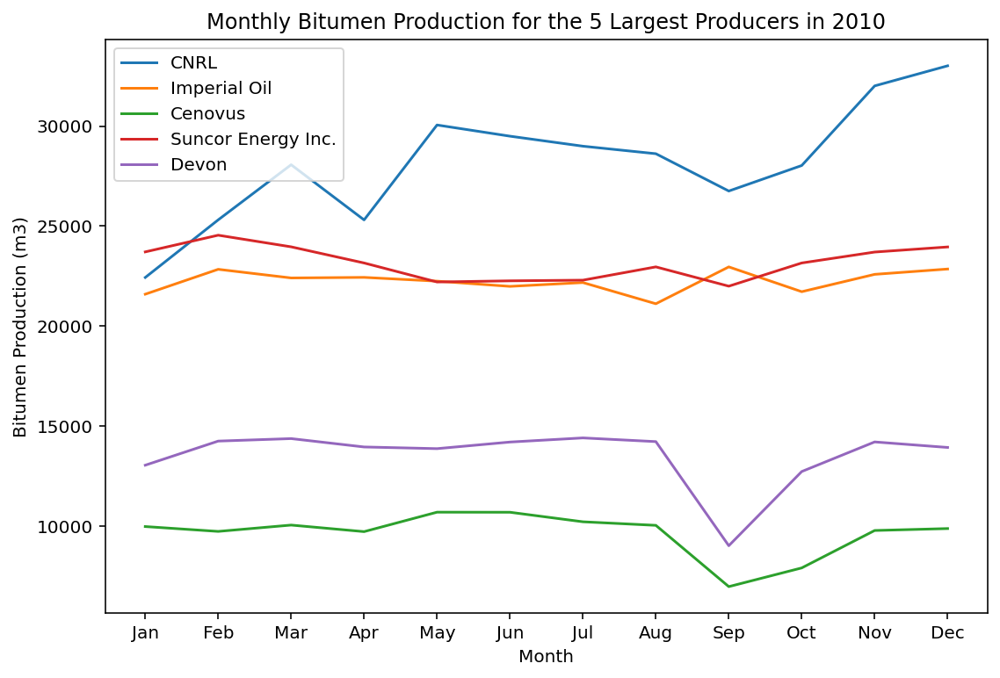

import requests
from bs4 import BeautifulSoup
# get the html
url = 'https://www.aer.ca/providing-information/data-and-reports/statistical-reports/st53'
r = requests.get(url)
data = r.text
# parse the html
soup = BeautifulSoup(data, 'html.parser')
# find all the links
links = soup.findAll('a', href = True)
# filter links for xls files
xls_links = [link for link in links if link.get('href').endswith('xls')]
# download the xls files and save them in the current directory
for link in xls_links:
xls_url = link.get('href')
xls_name = xls_url.split('/')[-1]
xls = requests.get(xls_url)
with open(xls_name, 'wb') as f:
f.write(xls.content)Downloading Alberta Oilsands Production Data using Python
python
web scraping
Disclaimer
This blog post is for educational purposes only. Any commercial use of the information provided in this blog post is prohibited. For more information about the AER copyright and permission to reproduce, please visit AER Copyright and Disclaimer. The author is not responsible for any damage or loss caused by the use of the information provided in this blog post.
Introduction
Alberta Energy Regulator (AER) lists the monthly injection and production data for all in-situ oilsands projects in Alberta on its website Alberta Energy Regulator. The data is available in several spreadsheets and can be downloaded from ST53: Alberta In Situ Oil Sands Production Summary. The annual data are reported in separate files in .xls format. Each file has 6 different sheets with information about bitumen, water, steam, wells, SOR, and WSR.
In the following, It is shown how to download the data using Python. The entire source code can be downloaded by clicking on </>Code next to the blog title.
Downloading the Data
requests and BeautifulSoup are used to download the xls files. The following code downloads all the xls files from the AER website and saves them in the current directory:
Listing all the saved xls files in the current directory:
import os
# filter only .xls files
xls_files = [file for file in os.listdir(os.getcwd()) if file.endswith('.xls')]
xls_files['ST53_2010-12.xls',
'ST53_2011-12.xls',
'ST53_2012-12.xls',
'ST53_2013-12.xls',
'ST53_2014-12.xls',
'ST53_2016-12.xls',
'ST53_2017-12.xls',
'ST53_2018-12.xls',
'ST53_2019-12.xls',
'ST53_2020-12.xls',
'ST53_2021-12.xls',
'ST53_Current.xls']Reading the Data
The .xls format is supported by Pandas using the xrld engine. Therefore, we import the xrld library along pandas and numpy libraries:
import xlrd
import pandas as pd
import numpy as npTo get a better understanding of each file, we can read the 2010 data file:
sheets = pd.read_excel(xls_files[0], sheet_name = None, skiprows = 3)
print(f'sheet names: {sheets.keys()}')sheet names: dict_keys(['BITUMEN', 'WATER', 'STEAM', 'WELLS', 'SOR', 'WSR'])This file has 6 sheets. The first three rows of each sheet are not useful. Therefore, we can skip them using the skiprows argument. The last few rows of each sheet are also not useful. There are some footnote information that can be skipped. The total production/injection/number of wells are also reported at the end of the first 4 sheets (BITUMEN, WATER, STEAM, and WELLS). We can skip them as well since we do the aggregation ourselves. Monthly “Conventional Bitumen Recovery” data are also reported in the BITUMEN sheet. We can skip them as well since we are only interested in the in-situ oilsands data.
The SOR and WSR sheets have a different structure and should be handled separately. We will skip them for now.
The number of rows to skip is not the same for all the sheets. However, there is a shared column called Recovery Method in the first 4 sheets (BITUMEN, WATER, STEAM, and WELLS) with an input string value, Total, in its last row. The row index of this cell can be used to remove all the rows below it in all 4 sheets. The following code finds the row index of the cell with the value Total in the Recovery Method column for the Bitumen sheet:
bitumen = sheets['BITUMEN']
bitumen.iloc[-15:-1, 0:5]| Operator | Scheme Name | Area | Approval Number | Recovery Method | |
|---|---|---|---|---|---|
| 162 | Koch Exploration Canada G/P Ltd. (¹) | NaN | Cold Lake | 9908D | Primary |
| 163 | NaN | NaN | NaN | NaN | Total |
| 164 | NaN | NaN | NaN | NaN | NaN |
| 165 | Conventional Bitumen Recovery | NaN | NaN | NaN | NaN |
| 166 | NaN | NaN | NaN | NaN | NaN |
| 167 | Total | NaN | NaN | NaN | NaN |
| 168 | NaN | NaN | NaN | NaN | NaN |
| 169 | NaN | NaN | NaN | NaN | NaN |
| 170 | Notes: | NaN | NaN | NaN | NaN |
| 171 | - Monthly production totals may be revised due... | NaN | NaN | NaN | NaN |
| 172 | - Total may not add due to rounding | NaN | NaN | NaN | NaN |
| 173 | - Conventional Bitumen production consists of ... | NaN | NaN | NaN | NaN |
| 174 | - Monthly average does not include months ther... | NaN | NaN | NaN | NaN |
| 175 | ¹ Amended this month | NaN | NaN | NaN | NaN |
# get the index of the last row using np.where
last_row_idx = np.where(bitumen[["Recovery Method"]] == "Total ")[0][0]
last_row_idx163bitumen = bitumen.iloc[0:last_row_idx,:]
bitumen.iloc[-4:, 0:5]| Operator | Scheme Name | Area | Approval Number | Recovery Method | |
|---|---|---|---|---|---|
| 159 | Frog Lake Energy Resources Corp. | NaN | Cold Lake | 9827B | Primary |
| 160 | Husky Oil Operations Limited | NaN | Cold Lake | 9873 | Primary |
| 161 | Canadian Natural Resources Limited | NaN | Athabasca | 9884D | Primary |
| 162 | Koch Exploration Canada G/P Ltd. (¹) | NaN | Cold Lake | 9908D | Primary |
Getting a summary statistics of monthly production data:
bitumen.describe()| Jan | Feb | Mar | Apr | May | Jun | Jul | Aug | Sep | Oct | Nov | Dec | Monthly Average | |
|---|---|---|---|---|---|---|---|---|---|---|---|---|---|
| count | 163.000000 | 163.000000 | 163.000000 | 162.000000 | 162.000000 | 159.000000 | 159.000000 | 159.000000 | 158.000000 | 156.000000 | 156.000000 | 153.000000 | 150.000000 |
| mean | 671.311840 | 713.568589 | 736.528160 | 719.761914 | 751.057407 | 770.060440 | 768.772013 | 762.359686 | 685.194494 | 761.591218 | 821.775385 | 849.108301 | 800.676533 |
| std | 2488.241673 | 2660.740849 | 2692.278391 | 2584.202061 | 2648.569375 | 2664.979209 | 2652.436071 | 2622.690639 | 2496.212516 | 2628.751620 | 2865.385297 | 2941.181627 | 2724.526904 |
| min | 0.000000 | 0.000000 | 0.000000 | 0.000000 | 0.000000 | 0.000000 | 0.000000 | 0.000000 | 0.000000 | 0.000000 | 0.000000 | 0.000000 | 0.670000 |
| 25% | 3.110000 | 3.660000 | 3.315000 | 2.067500 | 2.892500 | 6.040000 | 6.455000 | 6.655000 | 8.417500 | 9.100000 | 8.837500 | 11.100000 | 11.470000 |
| 50% | 39.570000 | 43.260000 | 51.980000 | 50.980000 | 55.885000 | 58.490000 | 50.490000 | 54.660000 | 55.860000 | 61.850000 | 60.265000 | 65.290000 | 69.835000 |
| 75% | 254.340000 | 270.585000 | 254.895000 | 261.485000 | 264.015000 | 273.185000 | 271.265000 | 287.000000 | 282.972500 | 265.727500 | 275.777500 | 358.940000 | 315.000000 |
| max | 23584.240000 | 24413.060000 | 23835.730000 | 23031.680000 | 22084.790000 | 22156.210000 | 22194.560000 | 22850.410000 | 21877.320000 | 23042.230000 | 23599.280000 | 23806.840000 | 23039.700000 |
Operators
The list of all operators in alphabetical order is obtained using the sorted() method:
operators = sorted(bitumen.Operator.unique())
operators['Action Energy Inc.',
'Baytex Energy Ltd.',
'Baytex Energy Ltd. (¹)',
'Baytex Energy Ltd. (¹²)',
'Bellatrix Exploration Ltd. (¹²)',
'Blackpearl Resources Inc. (¹)',
'Bonavista Petroleum Ltd.',
'Bronco Energy Ltd.',
'Buffalo Resources Corp.',
'Canadian Natural Resources',
'Canadian Natural Resources Limited',
'Canadian Natural Resources Limited (¹)',
'Canadian Natural Resources Limited (¹²)',
'Cenovus Energy Inc.',
'Cenovus Energy Inc. (¹)',
'Cenovus FCCL Ltd.',
'Connacher Oil And Gas Limited',
'ConocoPhillips Canada Limited',
'ConocoPhillips Canada Resources Corp.',
'Crispin Energy Inc.',
'Devon Canada Corporation',
'Devon NEC Corporation (¹)',
'ExxonMobil Canada Ltd.',
'Frog Lake Energy Resources Corp.',
'Harvest Operations Corp.',
'Husky Oil Operations Limited',
'Husky Oil Operations Limited (et Al)',
'Husky Oil Operations Limited (¹)',
'Husky Oil Operations Ltd.',
'Imperial Oil Resources (¹)',
'Japan Canada Oil Sands Limited (¹)',
'Koch Exploration Canada G/P Ltd.',
'Koch Exploration Canada G/P Ltd. (¹)',
'Manitok Exploration Inc.',
'Meg Energy Corp.',
'Murphy Oil Canada',
'Murphy Oil Company Ltd.',
'Nexen Inc.',
'North Peace Energy Corp.',
'Penn West Energy Trust',
'Penn West Petroleum Ltd.',
'Prosper Petroleum Ltd.',
'Shell Canada Energy',
'Shell Canada Limited',
'Solara Exploration Ltd.',
'Statoil Canada Ltd. (¹)',
'Suncor Energy Inc.',
'Suncor Energy Inc. (¹)',
'Sunshine Oilsands Ltd.',
'Total E&P Joslyn Ltd. (¹)',
'Twin Butte Energy Ltd.',
'Watch Resources Ltd.']Some operators names come with additional information in forms of superscript numbers in paranteses at the end of the name. These numbers and information are not useful for our analysis. Therefore, they should be removed:
operators = [operator.split('(')[0].strip() for operator in operators]
operators['Action Energy Inc.',
'Baytex Energy Ltd.',
'Baytex Energy Ltd.',
'Baytex Energy Ltd.',
'Bellatrix Exploration Ltd.',
'Blackpearl Resources Inc.',
'Bonavista Petroleum Ltd.',
'Bronco Energy Ltd.',
'Buffalo Resources Corp.',
'Canadian Natural Resources',
'Canadian Natural Resources Limited',
'Canadian Natural Resources Limited',
'Canadian Natural Resources Limited',
'Cenovus Energy Inc.',
'Cenovus Energy Inc.',
'Cenovus FCCL Ltd.',
'Connacher Oil And Gas Limited',
'ConocoPhillips Canada Limited',
'ConocoPhillips Canada Resources Corp.',
'Crispin Energy Inc.',
'Devon Canada Corporation',
'Devon NEC Corporation',
'ExxonMobil Canada Ltd.',
'Frog Lake Energy Resources Corp.',
'Harvest Operations Corp.',
'Husky Oil Operations Limited',
'Husky Oil Operations Limited',
'Husky Oil Operations Limited',
'Husky Oil Operations Ltd.',
'Imperial Oil Resources',
'Japan Canada Oil Sands Limited',
'Koch Exploration Canada G/P Ltd.',
'Koch Exploration Canada G/P Ltd.',
'Manitok Exploration Inc.',
'Meg Energy Corp.',
'Murphy Oil Canada',
'Murphy Oil Company Ltd.',
'Nexen Inc.',
'North Peace Energy Corp.',
'Penn West Energy Trust',
'Penn West Petroleum Ltd.',
'Prosper Petroleum Ltd.',
'Shell Canada Energy',
'Shell Canada Limited',
'Solara Exploration Ltd.',
'Statoil Canada Ltd.',
'Suncor Energy Inc.',
'Suncor Energy Inc.',
'Sunshine Oilsands Ltd.',
'Total E&P Joslyn Ltd.',
'Twin Butte Energy Ltd.',
'Watch Resources Ltd.']We use set() to get a unique list of operators:
operators = sorted([*set(operators)])
operators['Action Energy Inc.',
'Baytex Energy Ltd.',
'Bellatrix Exploration Ltd.',
'Blackpearl Resources Inc.',
'Bonavista Petroleum Ltd.',
'Bronco Energy Ltd.',
'Buffalo Resources Corp.',
'Canadian Natural Resources',
'Canadian Natural Resources Limited',
'Cenovus Energy Inc.',
'Cenovus FCCL Ltd.',
'Connacher Oil And Gas Limited',
'ConocoPhillips Canada Limited',
'ConocoPhillips Canada Resources Corp.',
'Crispin Energy Inc.',
'Devon Canada Corporation',
'Devon NEC Corporation',
'ExxonMobil Canada Ltd.',
'Frog Lake Energy Resources Corp.',
'Harvest Operations Corp.',
'Husky Oil Operations Limited',
'Husky Oil Operations Ltd.',
'Imperial Oil Resources',
'Japan Canada Oil Sands Limited',
'Koch Exploration Canada G/P Ltd.',
'Manitok Exploration Inc.',
'Meg Energy Corp.',
'Murphy Oil Canada',
'Murphy Oil Company Ltd.',
'Nexen Inc.',
'North Peace Energy Corp.',
'Penn West Energy Trust',
'Penn West Petroleum Ltd.',
'Prosper Petroleum Ltd.',
'Shell Canada Energy',
'Shell Canada Limited',
'Solara Exploration Ltd.',
'Statoil Canada Ltd.',
'Suncor Energy Inc.',
'Sunshine Oilsands Ltd.',
'Total E&P Joslyn Ltd.',
'Twin Butte Energy Ltd.',
'Watch Resources Ltd.']There are still some operators with similar names in the list. For example, ConocoPhillips Canada Resources Corp. and ConocoPhillips Canada Limited are the same company. In this scenario, we use one unique name for each company. The following dictionary is used to replace the names:
operators_dict = {'Canadian Natural Resources': 'CNRL',
'Canadian Natural Resources Limited': 'CNRL',
'Cenovus Energy Inc.': 'Cenovus',
'Cenovus FCCL Ltd.': 'Cenovus',
'ConocoPhillips Canada Resources Corp.': 'ConocoPhillips',
'ConocoPhillips Canada Limited': 'ConocoPhillips',
'Devon Canada Corporation': 'Devon',
'Devon NEC Corporation': 'Devon',
'ExxonMobil Canada Ltd.': 'Imperial Oil',
'Imperial Oil Resources': 'Imperial Oil',
'Murphy Oil Canada': 'Murphy Oil',
'Murphy Oil Company Ltd.': 'Murphy Oil',
'Penn West Energy Trust': 'Penn West',
'Penn West Petroleum Ltd.': 'Penn West',
'Shell Canada Energy': 'Shell',
'Shell Canada Limited': 'Shell'
}In the next section we use the above dictionary to replace the names in the data frame. It is also noted that there has been a number of acquisitions and mergers in the oil and gas industry. For example, Nexen Inc. was acquired by CNOOC in 2013 and Husky Energy Inc. was acquired by Cenovus Energy Inc. in 2019. However, we ignore these changes for the sake of simplicity.
Applying all the changes to the data frame with chain operations:
bitumen = (bitumen
.dropna(subset = ['Operator'])
.assign(Operator = lambda x: x.Operator.str.split('(').str[0].str.strip())
.assign(Operator = lambda x: x.Operator.str.replace(' ', ' '))
.replace({'Operator': operators_dict})
)
bitumen.Operator0 CNRL
1 CNRL
2 Baytex Energy Ltd.
3 North Peace Energy Corp.
4 Penn West
...
158 Devon
159 Frog Lake Energy Resources Corp.
160 Husky Oil Operations Limited
161 CNRL
162 Koch Exploration Canada G/P Ltd.
Name: Operator, Length: 163, dtype: objectLet’s print out the list of unique operators in the data frame:
# remove duplicates
operators = sorted([*set(bitumen.Operator)])
operators['Action Energy Inc.',
'Baytex Energy Ltd.',
'Bellatrix Exploration Ltd.',
'Blackpearl Resources Inc.',
'Bonavista Petroleum Ltd.',
'Bronco Energy Ltd.',
'Buffalo Resources Corp.',
'CNRL',
'Cenovus',
'Connacher Oil And Gas Limited',
'ConocoPhillips',
'Crispin Energy Inc.',
'Devon',
'Frog Lake Energy Resources Corp.',
'Harvest Operations Corp.',
'Husky Oil Operations Limited',
'Husky Oil Operations Ltd.',
'Imperial Oil',
'Japan Canada Oil Sands Limited',
'Koch Exploration Canada G/P Ltd.',
'Manitok Exploration Inc.',
'Meg Energy Corp.',
'Murphy Oil',
'Nexen Inc.',
'North Peace Energy Corp.',
'Penn West',
'Prosper Petroleum Ltd.',
'Shell',
'Solara Exploration Ltd.',
'Statoil Canada Ltd.',
'Suncor Energy Inc.',
'Sunshine Oilsands Ltd.',
'Total E&P Joslyn Ltd.',
'Twin Butte Energy Ltd.',
'Watch Resources Ltd.']Merging rows with the same operator
Let’s take a look at the first few rows of the data frame:
bitumen.iloc[0:5, 0:5]| Operator | Scheme Name | Area | Approval Number | Recovery Method | |
|---|---|---|---|---|---|
| 0 | CNRL | NaN | Cold Lake | 4746P | Commercial |
| 1 | CNRL | NaN | Cold Lake | 6726I | Commercial |
| 2 | Baytex Energy Ltd. | Cliffdale Pilot | Peace River Area 2 | 11034E | Commercial-CSS |
| 3 | North Peace Energy Corp. | Red Earth | Peace River Area 2 | 11209A | Commercial-CSS |
| 4 | Penn West | Seal | Peace River Area 2 | 11377A | Commercial-CSS |
Results show the data frame has multiple rows for some operators. These operators are active in different regions of the province. The Area column shows the region of the operator. To get the cumulative production for each operator, we need to merge the rows with the same operator name. Rows with the same operator name are merged into one row using the groupby() method. It groups rows with the same value in the specified column. The sum() method is used to sum the values in the other columns. The reset_index() method is used to reset the index of the data frame.
bitumen = bitumen.groupby('Operator').sum().reset_index()
bitumen.iloc[0:5, 0:5]| Operator | Jan | Feb | Mar | Apr | |
|---|---|---|---|---|---|
| 0 | Action Energy Inc. | 2.75 | 3.13 | 3.10 | 2.40 |
| 1 | Baytex Energy Ltd. | 1329.74 | 1328.52 | 1521.26 | 1265.24 |
| 2 | Bellatrix Exploration Ltd. | 0.00 | 0.00 | 0.00 | 0.00 |
| 3 | Blackpearl Resources Inc. | 1.34 | 3.32 | 1.43 | 0.69 |
| 4 | Bonavista Petroleum Ltd. | 318.60 | 296.70 | 287.84 | 268.92 |
We also add the production year to the dataframe as a new column:
bitumen['Year'] = xls_files[0].split('_')[-1].split('-')[0]
bitumen.iloc[0:5, 0:5]| Operator | Jan | Feb | Mar | Apr | |
|---|---|---|---|---|---|
| 0 | Action Energy Inc. | 2.75 | 3.13 | 3.10 | 2.40 |
| 1 | Baytex Energy Ltd. | 1329.74 | 1328.52 | 1521.26 | 1265.24 |
| 2 | Bellatrix Exploration Ltd. | 0.00 | 0.00 | 0.00 | 0.00 |
| 3 | Blackpearl Resources Inc. | 1.34 | 3.32 | 1.43 | 0.69 |
| 4 | Bonavista Petroleum Ltd. | 318.60 | 296.70 | 287.84 | 268.92 |
Choosing the top 5 producers in 2010
We first calculate the annual production for each company and then sort the data frame by the total bitumen production in descending order and select the first 5 rows:
bitumen['Total'] = bitumen.loc[:,"Jan":"Dec"].sum(axis = 1)# select the 5 largest producers
top5 = bitumen.sort_values(by = 'Total', ascending = False).head(5)
top5.iloc[:,-5:]| Nov | Dec | Monthly Average | Year | Total | |
|---|---|---|---|---|---|
| 7 | 32006.40 | 33009.93 | 28316.22 | 2010 | 338065.64 |
| 17 | 23701.99 | 23956.75 | 23159.13 | 2010 | 277909.48 |
| 8 | 22587.47 | 22853.46 | 22244.04 | 2010 | 266928.43 |
| 30 | 14212.22 | 13935.72 | 13522.57 | 2010 | 162270.74 |
| 12 | 9785.62 | 9882.21 | 9644.97 | 2010 | 115733.90 |
Plotting monthly bitumen production for the 5 largest producers
import matplotlib.pyplot as plt
import seaborn as sns# plot monthly bitumen production for the 5 largest producers
plt.figure(figsize = (9, 6))
sns.lineplot(data = top5.loc[:,"Jan":"Dec"].T, dashes = False)
plt.legend(top5.Operator)
plt.title('Monthly Bitumen Production for the 5 Largest Producers in 2010')
plt.xlabel('Month')
plt.ylabel('Bitumen Production (m3)')
plt.show()